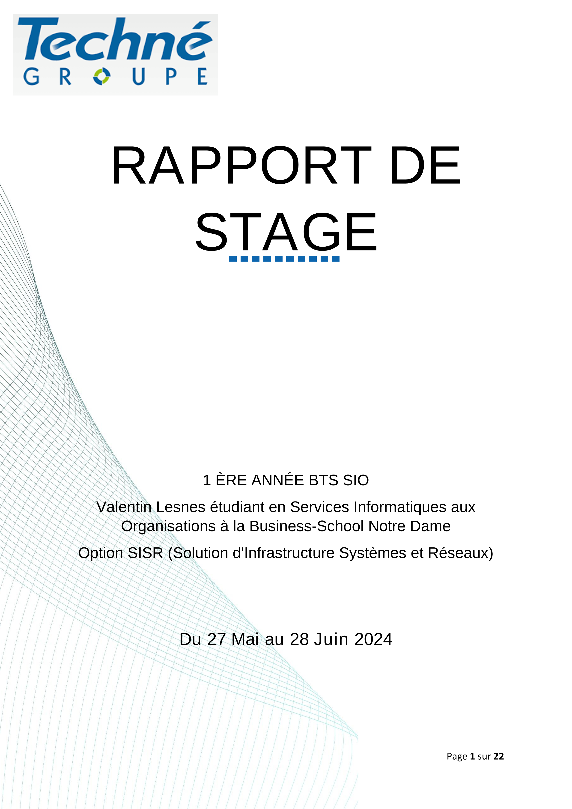
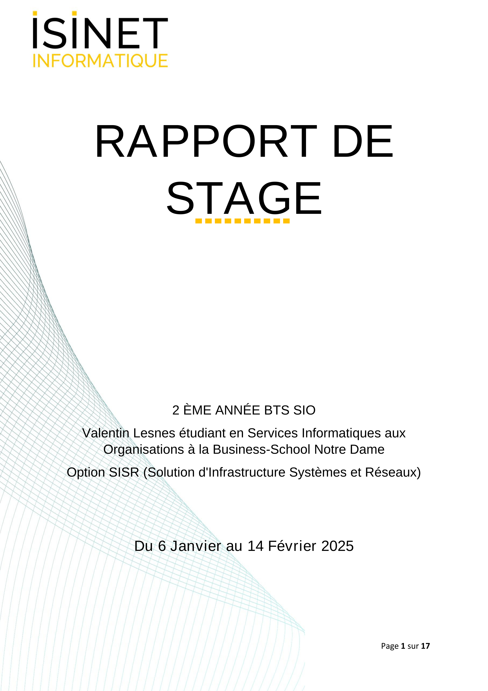
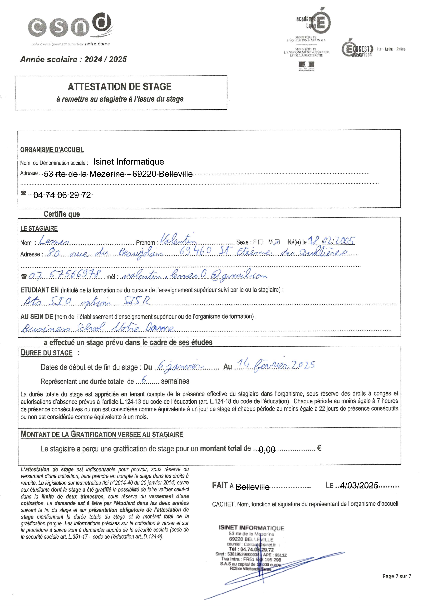

Vous retrouverez ci-dessous les différents stages que j'ai pu effectuer :
Première année : Techné
Situé à Morancé (69)
Missions Principales :
- Déploiement des Serveurs WDS et MDT
- Support aux utilisateurs Windows
- Administration & Cartographie réseau
- Dépannage d'ordinateurs

Rapport de Stage réalisé en 1ère année
Entreprise Techné - Durée: 5 semaines
Deuxième année : Isinet Informatique
Situé à Belleville en Beaujolaos (69)

Rapport de Stage réalisé en 1ère année
Entreprise Techné - Durée: 5 semaines
Missions Principales :
- Installation ordinateurs fixes et portable sous Windows 10 & 11
- Dépannage ordinateurs fixes et portable sous Windows 10 & 11
- Mise en place de Vlans
- Refonte procédures de sauvegarde à partir d'un modèle
Vous retrouverez ci-dessous les attestations de mes différents stages :

Stage de première année - Techné

Stage de deuxième année - Isinet Informatique
Bilan global des stages
Apports principaux
Stage Techné
- Esprit d'équipe
- Communication
- Connaissances Techniques
- Attitude Professionnelle
Stage Isinet Informatique
- Autonomie
- Rigueur
- Connaissances Techniques
Difficultés rencontrées
Stage Techné
- Communication
- Intégration
- Adaptation
Stage Isinet Informatique
- Intégration
- Rigueur